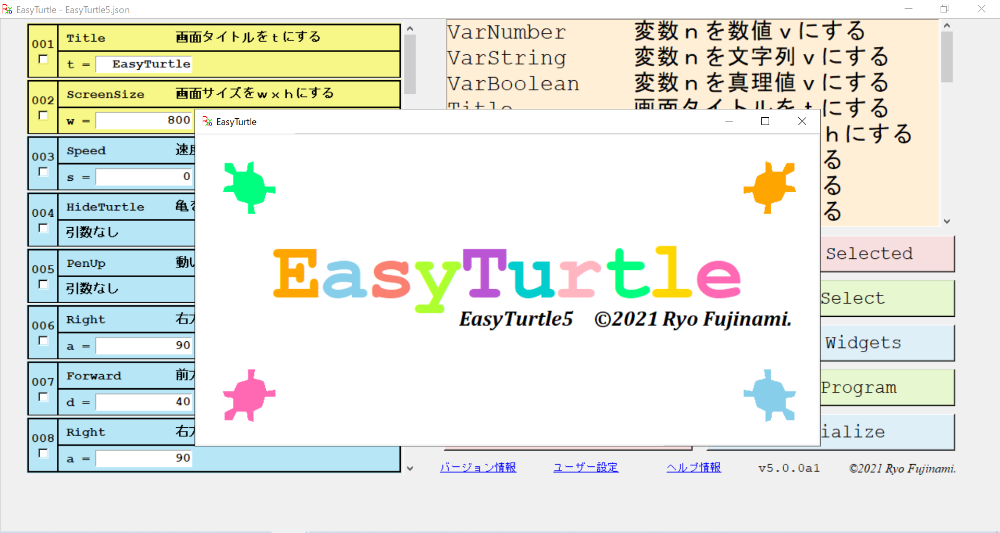

EasyTurtleとは
EasyTurtleとは、GUIを利用してPythonのTurtleモジュールを簡単に扱えるプログラムであり、完全に無料で使用することができます。また、Windows 10とLinux環境で実行が可能です。
値の入力とクリックのみでPythonのTurtleモジュールをプログラムできます。詳しくはGitHubを御覧ください。
最新版はGitHubからダウンロードできます。詳しくはこちらをご覧ください。
このソフトウェアを使用する場合、ライセンスに同意して頂く必要があります。
このソフトウェアの使い方についてはこちらをご覧ください。
また、このソフトウェアにはサンプルが付属しています。サンプルについての説明はこちらをご覧ください。
